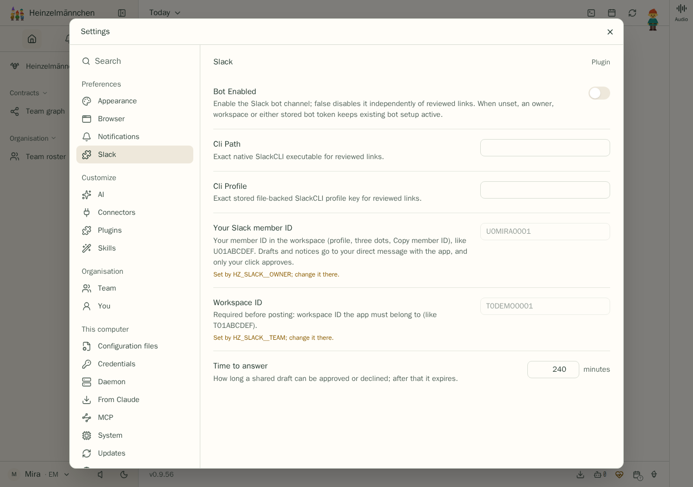
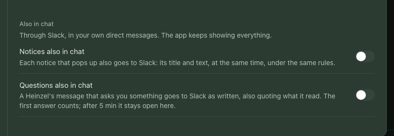
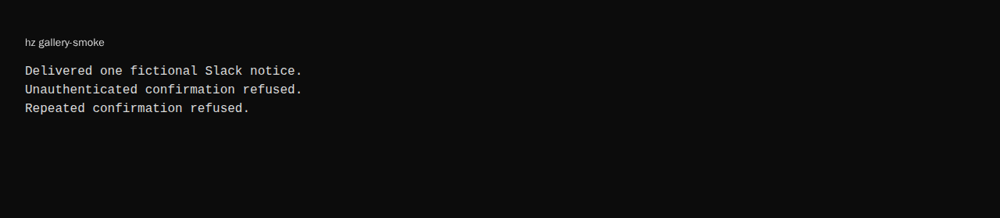
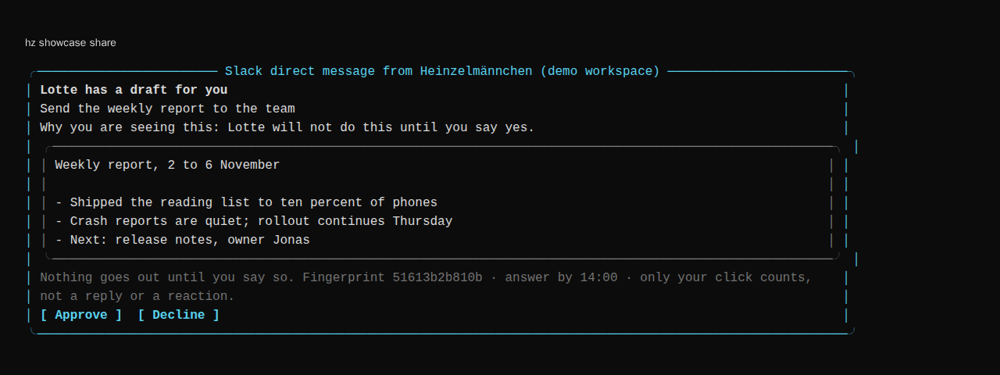
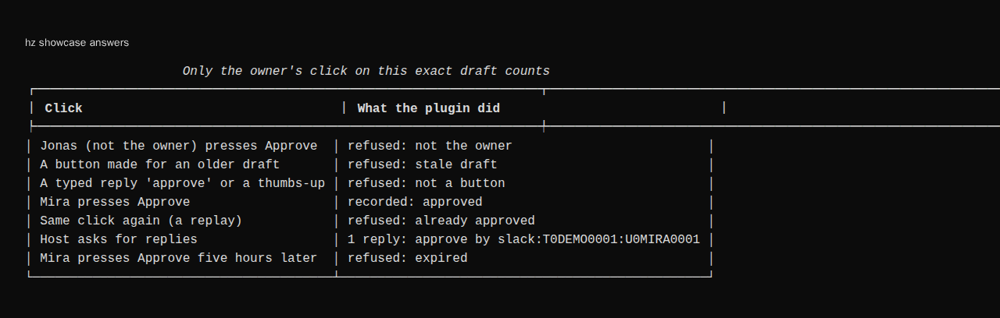

heinzel-slack
Isolated demonstration profile · Core 0.9.55 · Review these captures before committing. Click an image to inspect it at full size.

UI · Slack settings for a fictional member and workspace, including how long a draft can wait for a decision.
UI · Heinzel offers to send notices and questions through Slack direct messages when the Slack chat capability is selected.
CLI · A fixture verifies one fictional Slack delivery through Core's confirmation API and checks refusal of unauthenticated and repeated attempts.
CLI · Demo data: the fictional weekly-report draft and printed button labels, rendered in the terminal from Slack message blocks.
CLI · Demo data: fictional clicks exercise the real decision code; Mira's exact approval records one reply while invalid attempts are refused.